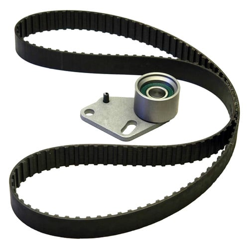

Kits de distribuição, correias dentadas, tensores, filtros, velas, bombas de combustível, juntas de vedação e sensores. Componentes de alta precisão com orientação técnica para confirmar a aplicação exata no seu veículo.
Consulte preços e disponibilidade com nossa equipe para a motorização exata do seu carro
Calculando componentes disponíveis...

Distribuição
Sistema de Sincronismo
Gates PowerGrip Timing Kit TCK014
Kit completo de sincronismo automotivo da linha PowerGrip. Inclui correia dentada de alta durabilidade e tensor mecânico calibrado, projetados para substituição simultânea dos componentes de sincronismo do motor.
Filtro de óleo lubrificante blindado de alta eficiência com meio filtrante reforçado. Retém partículas abrasivas geradas pela fricção interna do propulsor, preservando a vida útil e a estabilidade da pressão de lubrificação.
Código / Ref.:PSL909
Fabricante:Tecfil
Aplicação:Consulte veículo/motor (ex: Cummins / linha pesada)
Vela especial de ignição com eletrodo central ultrafino em liga nobre de Irídio (0,6 mm). Assegura máxima ignibilidade, queima uniforme da mistura ar-combustível, partidas mais rápidas e superior resistência à erosão térmica.
Bomba elétrica de combustível para instalação interna no tanque (in-tank) acompanhada de kit de componentes e pré-filtro. Fornece pressão e vazão estabilizadas para o circuito de injeção eletrônica conforme padrão de equipamento original.
Código / Ref.:0 986 580 804
Fabricante:Bosch
Aplicação:Consulte veículo/motor (ex: Renault Megane/Scénic)
Junta de cabeçote com estrutura metálica em aço multicamadas (MLS), desenvolvida para suportar elevadas pressões de compressão e variações térmicas severas do motor, garantindo vedação estanque entre bloco e cabeçote.
Sensor de Pressão Absoluta do Coletor (MAP) com conector de 3 pinos. Mede a pressão e o vácuo no coletor de admissão e envia o sinal à unidade de comando (ECU) para o cálculo exato do volume de ar e injeção de combustível.
Código / Ref.:71136
Fabricante:MTE-THOMSON
Aplicação:Consulte veículo/motor (ex: linha Peugeot/Citroën)
Bomba centrífuga de circulação de líquido de arrefecimento em alumínio injetado de alta densidade. Possui polia alta com roscas integradas para fixação da capa de proteção do motor, específica para aplicações homologadas.
Correia estriada de acessórios em EPDM de alta resistência térmica e mecânica. Perfil 6PK com 1795 mm de comprimento para acionamento sincronizado de alternador, bomba da direção hidráulica e compressor do ar-condicionado.
Trabalhamos com mais de 5.000 referências sob consulta em Nova Friburgo. Envie a foto da sua peça antiga ou os dados do veículo (marca, modelo, motor e ano) para nossa equipe no WhatsApp.
O motor de combustão interna é um conjunto de alta precisão composto por diversos subsistemas interdependentes. Conheça a função técnica de cada conjunto para realizar manutenções com total segurança.
1. Distribuição e Sincronismo
Coordena com exatidão micrométrica a rotação do virabrequim (pistões) com o eixo de comando de válvulas no cabeçote. Uma correia frouxa, desgastada ou rompida causa colisão grave entre válvulas e pistões.
Componentes: Correia dentada, tensor e polias
2. Lubrificação Forçada
Cria uma película hidrodinâmica protetora que impede o contato metal com metal entre bronzinas, virabrequim, camisas de cilindro e tuchos, além de atuar ativamente na dissipação de calor interno.
Componentes: Filtro de óleo, cárter e pescador
3. Filtragem Multicâmaras
Impede que impurezas microscópicas entrem na admissão de ar, no circuito lubrificante e nos injetores. Nota: o filtro de cabine climatiza o ar interno dos passageiros, não afetando o motor.
Componentes: Filtro de ar, óleo e combustível
4. Ignição & Centelha
Transforma os 12V da bateria em pulsos de mais de 25.000V nas bobinas para gerar uma faísca potente e precisa no eletrodo da vela, inflamando a mistura no avanço correto.
Componentes: Velas, cabos resistivos e bobinas
5. Arrefecimento Térmico
Mantém a temperatura operacional constante entre 85°C e 95°C. A bomba d'água faz circular o fluido e a válvula termostática abre ou fecha o fluxo em direção ao radiador.
Componentes: Bomba d'água, válvula e aditivos
6. Alimentação & Injeção
A bomba de combustível pressuriza a linha e fornece a vazão volumétrica estipulada para a flauta de distribuição, permitindo que os bicos pulverizem o combustível em névoa fina.
Componentes: Bomba elétrica, pré-filtro e bicos
7. Vedações e Estanqueidade
Resistem a altas pressões térmicas e dinâmicas, isolando as galerias de água das de óleo e selando os cilindros de compressão para evitar contaminação mútua e perda de força.
Componentes: Junta de cabeçote, cárter e retentores
8. Sensores & Gerenciamento
Os "olhos e ouvidos" da central eletrônica (ECU). Informam a rotação, posição dos pistões, temperatura do motor e proporção da queima para dosar ar e injeção a cada milissegundo.
Componentes: Rotação, fase, MAP, sonda lambda
Cabeçote, Válvulas e Tuchos
A Câmara Superior de Controle dos Gases
O cabeçote abriga as válvulas de admissão e escape acionadas pelo comando. Folgas incorretas em tuchos mecânicos ou tuchos hidráulicos despressurizados geram ruídos e perda de vedação estanque. A aplicação correta de guias, retentores de válvula e juntas é mandatória em qualquer retífica ou intervenção.
Retentores de VálvulaTuchos HidráulicosParafusos de Cabeçote
Correias de Acessórios (Poly-V) vs. Correia Dentada
Enquanto a correia dentada atua no sincronismo interno (com dentes e sincronia obrigatória), a correia Poly-V (estriada) aciona os acessórios externos: alternador, bomba d'água (em alguns veículos) e direção hidráulica. Ambas exigem inspeção preventiva contra trincas, ressecamento e ruídos de patinamento.
Compreenda como os componentes trabalham em harmonia dinâmica contínua dentro dos cilindros do motor.
01
Admissão e Compressão
A válvula de admissão abre enquanto o pistão desce, aspirando o ar filtrado misturado ao combustível injetado. Ao subir, a câmara se fecha hermeticamente graças às juntas e anéis de segmento, comprimindo a mistura para máxima densidade energética.
Filtro de Ar, Bicos e Juntas de Vedação
02
Combustão e Expansão
A vela de ignição dispara a centelha elétrica na fração exata de segundo comandada pela ECU e pelo sensor de rotação. A queima expande os gases com violência calculada, empurrando o pistão para baixo e gerando o torque mecânico motriz do veículo.
Velas de Ignição, Bobinas e Sensores
03
Exaustão e Arrefecimento
A válvula de escape abre e os gases queimados são expelidos em direção ao coletor, onde a sonda lambda analisa a queima residual. Simultaneamente, o fluxo forçado de líquido de arrefecimento e óleo dissipa a carga térmica acumulada.
Bomba d'Água, Válvula Termostática e Lubrificante
Diagnóstico Preventivo
Sinais que Merecem Atenção no Motor
O comportamento mecânico do veículo comunica necessidades de revisão. Atenção: sintomas não substituem diagnóstico profissional, mas justificam inspeção em oficina especializada.
1
Ruído metálico na região da distribuição
Chiados, assobios contínuos ou estalos na lateral do motor podem indicar rolamentos tensores ressecados, folga no eixo da bomba d'água ou desgaste físico da correia.
2
Dificuldade ou demora na partida a frio
Motor girando muito tempo antes de pegar pode estar associado a perda de pressão na linha de combustível, velas carbonizadas ou sensor de temperatura com leitura imprecisa.
3
Falhas em acelerações ou perda de torque
Engasgos ao pisar no acelerador sugerem fuga de centelha em cabos/velas, vazão insuficiente na bomba elétrica ou filtro de combustível saturado com sedimentos.
4
Ponteiro de temperatura oscilando ou alto
Temperatura subindo além do meio da escala exige parada preventiva. Pode haver travamento da termostática, vazamento de fluido, defeito na bomba d'água ou queima de junta.
5
Fumaça incomum saindo pelo escapamento
Fumaça azulada sugere queima de óleo (retentores de válvula ou anéis); fumaça branca densa e adocicada pode indicar líquido de arrefecimento entrando nas câmaras; fumaça preta é excesso de combustível.
6
Consumo anormal ou nível de óleo descendo
Diminuição acelerada na vareta sem manchas aparentes sob o carro aponta para vazamento interno por guias de válvula ou anéis de pistão fatigados.
7
Luz de injeção acesa constante no painel
Alerta de que a ECU detectou leituras fora dos parâmetros de fábrica em sensores (sonda lambda, sensor de detonação, MAP/MAF ou atuadores de marcha lenta).
8
Marcha lenta irregular ou vibrando
Oscilação de RPM no semáforo ou trepidação excessiva no volante com o veículo parado pode ter origem em entrada falsa de ar no coletor, bicos descalibrados ou velas desgastadas.
9
Gotas ou poças de fluido sob o cofre
Óleo escuro indica ressecamento de juntas (tampa ou cárter) ou retentores de virabrequim; fluido colorido (rosa, verde ou azul) aponta vazamento no sistema de arrefecimento.
Atenção Técnica: Sintomas são alertas que justificam inspeção profissional. Evite a troca empírica de componentes sem antes efetuar o diagnóstico elétrico/mecânico com scanner automotivo e testes de compressão e pressão de linha.
Longevidade do Motor
Manutenção Preventiva vs. Corretiva
Substituir componentes de desgaste programado antes do término de sua vida útil custa uma fração do valor de uma retífica mecânica completa. Uma correia dentada rompida, por exemplo, pode empenar válvulas, danificar pistões e trincar o cabeçote.
Óleo e Filtro de Óleo Rigorosamente no Prazo
Respeite o prazo em meses mesmo se não atingir a quilometragem; o óleo oxida em contato com o ar e os gases do cárter.
Troca do Kit de Distribuição Completo
Nunca troque apenas a correia mantendo tensores antigos; rolamentos com folga desgastam prematuramente a correia nova.
Líquido de Arrefecimento com Aditivo Protetor
Água pura de torneira corrói peças de alumínio, cria cavitação no rotor da bomba e enferruja as galerias do bloco.
Regime de Uso Severo
Você roda em Regime Severo em Nova Friburgo?
A maioria dos motoristas desconhece que trajetos diários com relevo acidentado e paradas frequentes enquadram o veículo no regime severo estipulado pelos manuais:
Trajetos curtos (menos de 8 km): O motor não atinge a temperatura ideal de operação, gerando condensação de água no cárter e formação de borra.
Trânsito urbano para-e-anda (Stop & Go): Longos períodos em marcha lenta aumentam as horas de funcionamento do motor sem somar quilometragem correspondente no odômetro.
Topografia serrana e cargas elevadas: Subidas íngremes constantes exigem maior esforço térmico e torque contínuo da transmissão e do motor.
Recomendação Geral dos Fabricantes: Em regime severo, os intervalos recomendados de troca de óleo, filtros e inspeção da correia dentada devem ser reduzidos pela metade ou conforme orientações do manual do proprietário.
Guia do Proprietário
Checklist Preventivo de Inspeção do Motor
Utilize este roteiro visual para acompanhar as revisões periódicas do seu carro. Manter esses 14 itens em dia preserva o valor e a confiabilidade do automóvel.
✓
Nível e Coloração do Óleo
Medir em superfície plana com motor frio ou 10 min após desligar.
✓
Filtro de Óleo
Substituição indispensável a cada troca de lubrificante.
✓
Filtro de Ar do Motor
Verificar acúmulo de poeira e saturação das aletas de papel.
✓
Filtro de Combustível
Trocar conforme plano para preservar bicos e bomba elétrica.
✓
Correia Dentada & Tensores
Acompanhar prazo por quilometragem e tempo decorrido.
✓
Correia de Acessórios (Poly-V)
Inspecionar visualmente contra ressecamento e trincas transversais.
✓
Fluido de Arrefecimento
Checar nível no vaso expansor e concentração de aditivo inibidor.
✓
Bomba d'Água
Inspecionar ruídos no rolamento e marcas de vazamento no respiro.
✓
Velas e Cabos de Ignição
Avaliar desgaste do eletrodo e folga conforme especificação.
✓
Inspeção de Juntas (Tampa/Cárter)
Verificar ausência de umedecimento ou melamento de óleo no bloco.
✓
Retentores de Comando e Virabrequim
Garantir que não haja vazamentos atingindo as correias dentadas.
✓
Mangueiras do Arrefecimento
Examinar maciez, inchaço por óleo ou ressecamento das abraçadeiras.
✓
Luzes-Espia no Painel de Instrumentos
Nenhuma luz de injeção ou pressão de óleo acesa com motor ligado.
✓
Estabilidade na Marcha Lenta
Giro homogêneo sem oscilações bruscas nem engasgos no escape.
Qualidade e Procedência
Marcas de Confiança para Peças de Motor
Trabalhamos com os principais fabricantes homologados para a linha automotiva
GatesCorreias e Tensores de Motor
ContinentalCorreias e Polias
MahleComponentes de Motor e Filtros
SabóJuntas e Retentores Automotivos
TecfilFiltros de Óleo, Ar e Combustível
FramFiltros Automotivos
NGKVelas e Cabos de Ignição
BoschBombas de Combustível e Ignição
DelphiInjeção e Bombas Elétricas
Magneti MarelliInjeção e Sensores
MTE-ThomsonSensores e Válvulas
ParafluAditivos de Arrefecimento
Tira-Dúvidas
Perguntas Frequentes sobre Peças de Motor
Esclareça as dúvidas mais comuns sobre substituição de correias, filtros, velas e aplicação mecânica.
Quando devo trocar a correia dentada do motor?
O intervalo de substituição varia conforme a montadora, o modelo e a motorização, sendo estipulado tanto por quilometragem quanto por tempo limite (em anos), o que ocorrer primeiro. Em condições de uso severo (trânsito urbano intenso, poeira ou trajetos curtos frequentes), esse intervalo deve ser antecipado conforme as orientações expressas no manual do proprietário.
Existe uma quilometragem fixa e universal para trocar a correia?
Não existe quilometragem universal para todos os veículos. Motores de 8 válvulas, 16 válvulas, motores com correia banhada em óleo ou correias convencionais de borracha com cordonéis estruturais possuem planos de manutenção específicos determinados por seus respectivos fabricantes de engenharia automotiva.
É necessário trocar o tensor e a bomba d'água junto com a correia?
É fortemente recomendada a substituição do conjunto completo (kit de distribuição). Os rolamentos tensores sofrem o mesmo desgaste de rotação da correia. Nos veículos em que a bomba d'água é acionada pela correia dentada, trocá-la conjuntamente evita ter que desmontar toda a distribuição novamente caso ocorra travamento ou vazamento precoce.
Qual óleo lubrificante devo usar no meu carro?
O óleo correto é exclusivamente aquele que atende à viscosidade SAE (ex: 5W-30, 0W-20, 10W-40) e às normas de desempenho (API, ACEA ou homologações específicas da montadora) detalhadas no manual do veículo. O uso de viscosidade incorreta prejudica o fluxo a frio e a proteção das peças móveis.
Quando devo substituir o filtro de óleo do motor?
A melhor prática de manutenção preventiva é trocar o filtro de óleo rigorosamente a cada troca de lubrificante. Manter o filtro antigo retém cerca de meio litro de óleo saturado e impurezas que contaminam imediatamente a nova carga de óleo novo.
Qual a função e a frequência de troca do filtro de ar?
O filtro de ar retém partículas abrasivas que riscam as paredes dos cilindros e desgastam os anéis de pistão. A troca deve acompanhar as revisões periódicas do fabricante, sendo antecipada em regiões com poeira ou trânsito intenso. Um filtro saturado aumenta o consumo de combustível e diminui a potência.
Para que serve o filtro de combustível?
O filtro de combustível retém micropartículas sólidas e resíduos presentes no tanque antes que atinjam a bomba de combustível e os orifícios microscópicos dos bicos injetores. Sua saturação causa perda de pressão na linha, engasgos e falhas em altas rotações.
Para que servem as velas de ignição?
As velas conduzem a alta tensão elétrica até a câmara de combustão, criando a centelha (faísca) que queima a mistura comprimida de ar e combustível. Velas com eletrodos desgastados exigem maior tensão das bobinas, podendo sobrecarregá-las e queimar o módulo de injeção.
Falha de ignição no motor significa sempre problema nas velas?
Não necessariamente. Falhas de combustão podem ter diferentes causas: bobinas de ignição ineficientes, cabos de vela com fuga de corrente, bicos injetores descalibrados, combustível adulterado ou perda de compressão nos cilindros. É recomendável avaliação com scanner automotivo.
Qual a função da bomba d'água no arrefecimento?
A bomba d'água força a circulação contínua do fluido de arrefecimento pelas galerias do bloco, do cabeçote e pelo radiador, dissipando o calor da combustão para manter a temperatura de equilíbrio ideal do motor.
O motor está aquecendo acima do normal. Isso pode ter várias causas?
Sim, o superaquecimento pode ter múltiplas origens: válvula termostática travada fechada, vazamento de fluido no radiador ou mangueiras, ventoinha inoperante, tampa do reservatório sem vedação de pressão, bomba d'água com rotor quebrado ou junta de cabeçote queimada. Requer diagnóstico imediato para evitar empenamento de peças metálicas.
Como saber qual peça de motor serve exatamente no meu carro?
Para identificar a peça correta, é necessário informar a marca, modelo, ano de fabricação, versão exata e código de motorização (incluindo quantidade de válvulas, cilindrada e combustível). Quando disponível, o código gravado na peça original ou número do chassi permite precisão absoluta de compatibilidade.
Posso comprar peças de motor informando apenas o modelo e o ano do veículo?
Muitas vezes isso não é suficiente. Um mesmo modelo de carro no mesmo ano pode ter variações de motores (ex: 1.0 8V, 1.4 8V, 1.6 16V, 2.0 16V), sistemas de injeção diferentes ou modificações de projeto introduzidas durante o ano-modelo. Sempre confirme os detalhes técnicos com nossa equipe.
Qual a importância das juntas e retentores no motor?
As juntas (como a do cabeçote, tampa de válvulas e cárter) e os retentores garantem a vedação estanque entre os componentes metálicos usinados, impedindo vazamentos de óleo lubrificante, líquido de arrefecimento e fuga de compressão dos cilindros. Cada junta exige especificação de material e espessura idêntica à de fábrica.
Explore Outras Categorias Tucano Auto Peças
Soluções completas em autopeças mecânicas, elétricas e estética automotiva
Nossa equipe técnica consulta os catálogos oficiais dos fabricantes para garantir a peça certa sem dor de cabeça. Envie uma mensagem com os dados do seu veículo.
Copie e envie no WhatsApp para atendimento ágil:
Marca: [Ex: Fiat]
Modelo: [Ex: Palio]
Ano: [Ex: 2014]
Motorização: [Ex: 1.0 8V Fire EVO Flex]
Peça procurada: [Ex: Kit Correia Dentada e Tensor]